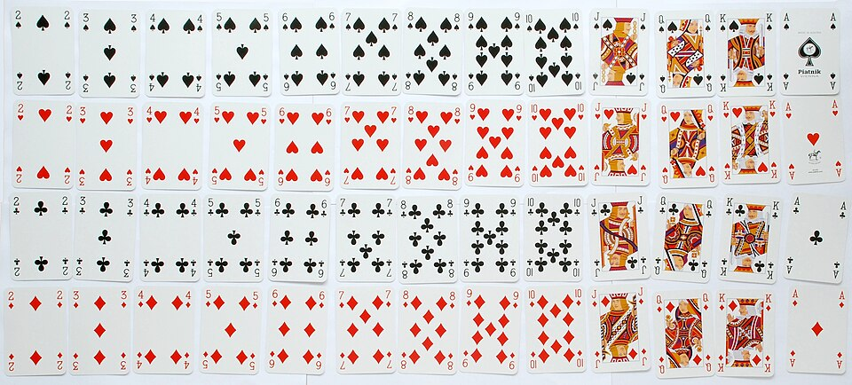
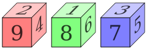

Probability
After a couple of theory questions that are related to this week’s content, this workshop has a few different more ‘practical’ exercises. When you get to these, you’re welcome to work with other people to explore the problems, working toward a solution collaboratively.
The 52 Card Pickup
A standard 52 card deck is split into four suits (spades ♠, hearts ♥, clubs ♣, and diamonds ♦), with 13 cards for each suit (an Ace, nine numbered \(2\)-\(10\), plus three face cards: Jack, Queen, and King).

{kind=link}
Sometimes aces are treated as a \(1\). At other times they’re treated as the most valuable card (known as ‘ace high’), as suggested in the photo above.
To ‘draw’ a card means to choose one at random. From this deck,
- What’s the probability of drawing 🂡, the ace of spaces?
- What’s the probability of drawing a red card? (i.e. ♦ or ♥)
- What’s the probability of drawing a Jack? (i.e. 🂫, 🂻, 🃛, or 🃋)
- What’s the probability of drawing a face card?
Sometimes, we might have some information about the card we’ve drawn. This changes things! From the 52 card deck,
- What’s the probability of drawing an ace, given I know the card is red?
- What’s the probability that the face card I just drew is a Jack?
Sans Remplacement
In a game, cards are usually drawn continuously rather than putting them back between each draw. For example, if I draw 2 cards from a 52 card deck these cards cannot be the same: they are drawn without replacement.1 Starting each time from a full 52 card deck,
- If I draw an ace, what’s the probability that the next draw is an ace?
- If I draw a Jack card, what’s the chance of the next being a face?
- If I draw red (♦ or ♥), what’s the probability the next is black (♠ or ♣)?
There’s a whole family of card games (including Blackjack, Pontoon, and Vingt-Un) where players aim to obtain a hand that adds up to 21. In these games, any face card is usually treated as a ‘10’ and an ace may count as a ‘1’ or an ‘11’ as the player desires.
Starting from a clean deck, what is the probability tree for getting 21 in just two cards?
Dice Games
Each of these exercises includes an experimental aspect. There’s a wee bit of theory involved in each, but you’ll need a set of the dice described to have a proper go!
Standard dice… twice!
You’ll need at least three or four standard six-sided dice - abbreviated to D6. Generally, we abbreviate rolling \(n\) many \(m\)-sided dice by nDm.

{kind=link}
- Roll 1D6. How likely was the outcome?
- Roll 2D6, taking the sum as the outcome. How likely was this?
- What does the probability tree look like for summing 2D6?
- What happens as the number of D6 increase to 3D6, 4D6, or beyond?
The house always wins
Probabilities can sometimes behave in unintuitive ways, e.g. the gambler’s fallacy. For this exercise you’ll need a set of three nontransitive dice.

{kind=link}
- If rolling the three dice, which is the highest?
- In pairs, try the following game:
- Player 1 picks their dice,
- Player 2 picks their dice,
- Both roll and the highest wins.
- What’s the winning strategy for player 2?
- How does this change if instead it’s two dice and the results are added?
DIY D6
Many highstreet clothing chains attach ‘size cubes’ to hangers so that shoppers don’t have to find the label to check the size. However, these aren’t widely reused and generate a lot of plastic waste.

{kind=link}
Growing up, I had the idea that these could be reused as D6 using the top as the 1, the bottom as the 6, and the four sides as 2-5. Was I correct? Could these be reused as fair D6?
Footnotes
This is in contrast to dice: if I roll two dice, they can have the same outcome. We say that the outcomes are drawn with replacement.↩︎